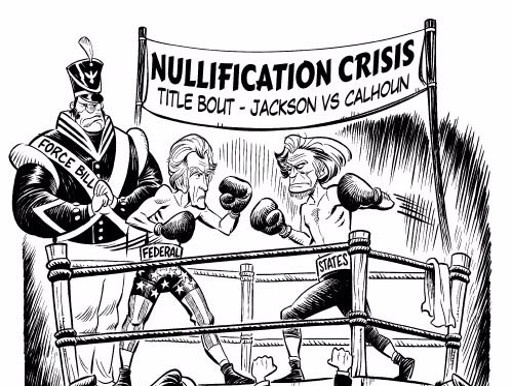
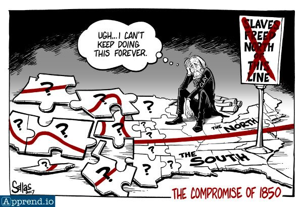

triumvirate
Nullification Crisis of 1832
The nullification crisis of 1832 was caused initially by protective tariffs passed by Congress known as the Tariffs of Abominations. These tariffs were intended to protect the industries of the North. The South was purchasing goods imported from Europse due to the lower prices, and the tariffs were intended to encourage the South to buy goods from the North. However, these tariffs were of obscene amounts, leading the South to be greatly disgruntled by the tariffs.
Of these, South Carolina was greatly angered, and it's senator, John Calhoun pushed forward his theory of nullification. He pushed forward that the states had the power to nullify federal laws. The South Carolina people were already up in arms against the tariffs. To solve this crisis, Henry Clay pushed the compromise tariff of 1833 which over a 10 year period of time reduced the tariffs.
Wilmot Proviso
The Wilmot Proviso was a proposed bill which pushed for all new states admitted into the union to be free states. The Wilmot Proviso was opposed by Henry Clay in his speech on the compromise report. It pushed against the idea of the Wilmot Proviso under the fact that it would spark a war. He claimed that states have the right to dictate whether or not they should be a free or slave state and that if it were forced to be either way or the other, it would mean a civil war.
Missouri Compromise of 1850
The Missouri Compromise of 1850 was the probably the last major piece of legislature affected by the great triumvirate. Henry Clay and Daniel Webster both gave speeches on the fact that the union must be preserved and a compromise must be made. Clay pushed for the ban of slave trade in the Distric of Columbia while still allowing for the practice of slavery to take place. He also wished for fugitive slave laws. He also pushed for the fact that Congress did not have the power to decide whether a state/territory was to be a slave or free one. Instead, he mandated that the state/territory should decide for itself. After Webster's speech and a great amount of deliberation, a delicate compromise was eventually reached.
